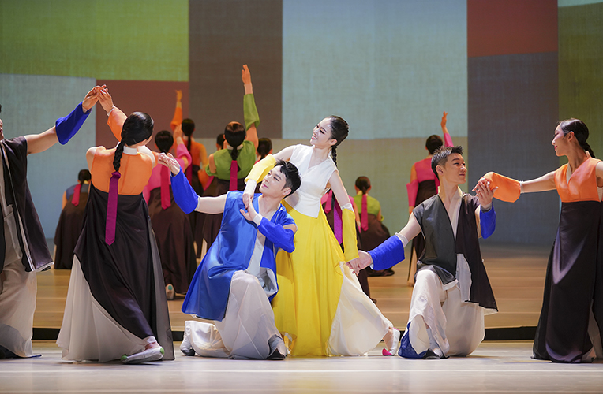
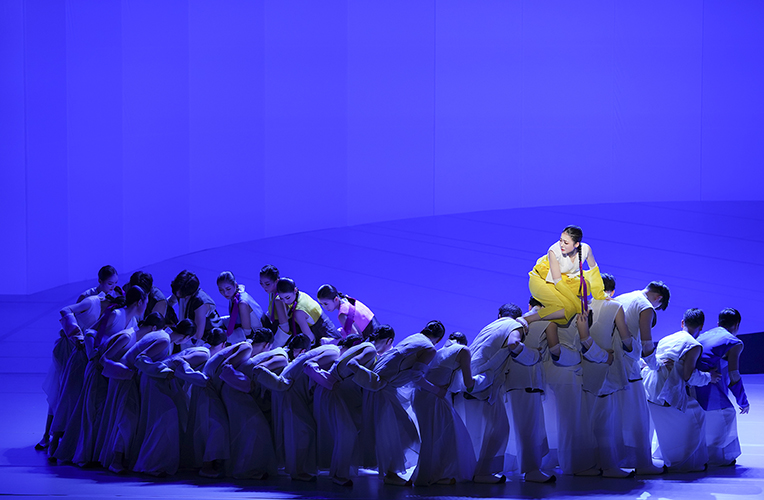
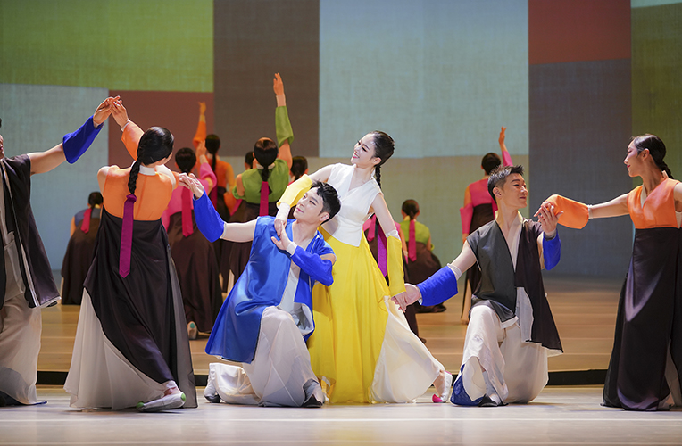
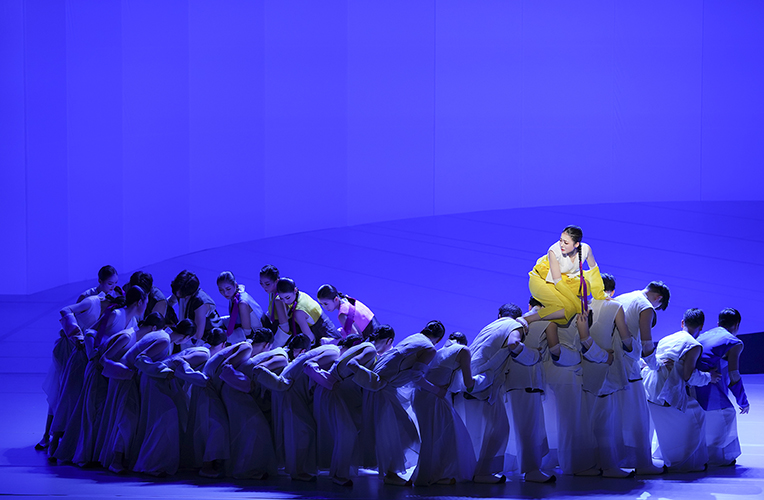

Dance Theater Regular Concert <Ganggang>
- Time
- 3.3.(Fri) ~ 3.4.(Sat) Weekdays 19:30 Weekends 15:00
- Venue
- Yeonak-dang Hall
- Ticket Price
- S seat 10,000won A seat 8,000won
- Cast/Direct
- Busan National Gugak Center Music groups and Dance theater, invited performers/ Producer·Choreographer·Dance director | Jeong Sin-hye Script | Cheon Jeong-wan Music director·Conductor·Composer | Yi Jeong-ho
- Audience Age
- Children in elementary school or older
The narratives and sentiments of Ganggangsullae unfold with the song about our life, which has generation and extinction all the time.
Ganggang is a dance drama made on the basis of folk dance Ganggangsullae, which was designated to UNESCO World Cultural Heritage. The circular dance has neither a beginning nor an end, but represent endless and basic movements. By reinterpreting traditional dance, the dance drama gives energy of circulation, harmony, and positive power to the audience, just like our life and the hand movements connecting and breaking the circle all the time.
Program
Prologue_Generation and Extinction 1 movement Connecting Ganggang 2 movement Play, the circular life 3 movement Breaking Ganggang Epilogue_Again, generation and extinction
* Schedule and performances are subject to change.

 


